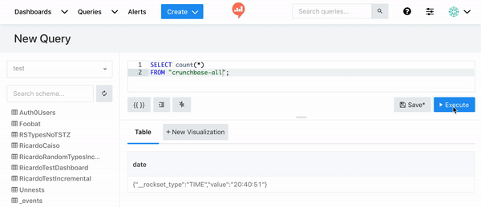

Not sure if this should be posted as an official issue so I figured I’d start off by posting here.
I’ve been doing some local development on Redash leading up to PR #4076 and during my development I found that the browser-side cache was non-deterministically returning old query results for new queries.
I setup my dev environment following https://redash.io/help/open-source/dev-guide/docker (made a slight change to the docker-compose file to automatically create the db for me, you can find this version community/redash at master · rockset/community · GitHub).
I would launch all the services on my Mac using docker-compose up -d and then open localhost:5000 to see how my changes were coming along. Each time I would make a new change, I would re-build the image and again run docker-compose up -d (later on I started using docker-compose down && docker-compose up -d but the issue persisted.
After doing this a couple times I noticed that new queries were returning the result of previous queries from several docker-compose up’s ago. For example, I would have some group by query and then after several tear-downs and re-builds of the service I would run a simple count(*) and the result would be the same as that group by from an hour ago. What’s even weirder is running this count(*) many times in a row would lead to different results. Sometimes it would be the correct answer, sometimes it would return that aggregate result, and sometimes it would return a result from another query I had run previously.
I finally realized that disabling caching on my browser stopped this issue. The changes I made are simple changes to the internals of a data source and should have no effect on anything related to this type of behavior.
Has anyone seen something like this before, have an insight why this is happening, or think I should make this an official issue?
